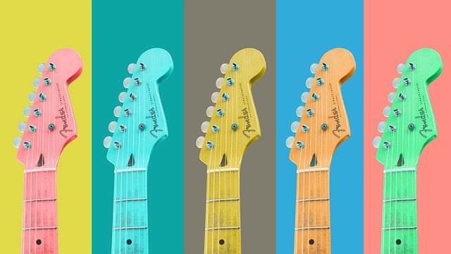

My Colourful life

"My Colourful Life" is a captivating and uplifting song that takes listeners on a vibrant journey through the myriad of emotions and experiences that shape one's existence. With its infectious melodies and heartfelt lyrics, this imaginative composition celebrates the tapestry of life's moments, both big and small, that add splashes of color to our everyday existence.
Good Ole Days

"Good Ole Days" is a nostalgic and heartwarming song that takes listeners on a sentimental journey back in time. With its soulful melodies and evocative lyrics, this heartfelt composition captures the essence of cherished memories and the longing for simpler times.
Guitar's my soul
Whether it's the gentle strumming of acoustic chords or the blazing fury of electric solos, "Guitar's My Soul" stands as a testament to the profound bond between musician and their trusted six-string companion. It celebrates the eternal flame that burns within every artist's heart, fueled by the timeless power of music.